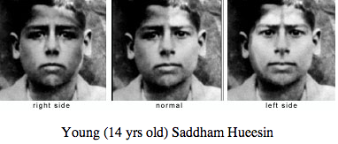

A Brain Teasing Ramble
In 1981, Roger Sperry won the Nobel Prize in Physiology for his research concerning the brain, “split brain experiments,” and the resulting conclusions he made. Interestingly enough, he actually split the award with two other men and their research on information processing in the visual system (extremely interesting and important, but irrelevant to this post). Sperry essentially proved that the brain’s left and right side mandated and controlled different activities and thought processes, but are perceived as one source. Additional research derived from Julian Jaynes’ The Origin of Consciousness in the Breakdown of the Bicameral Mind (1976) showed that a person’s “smiling pose” actually communicates both the left and right side’s base emotion...
A Brain Teasing Ramble
In 1981, Roger Sperry won the Nobel Prize in Physiology for his research concerning the brain, his “split brain experiments,” and the resulting conclusions he could make. Interestingly enough, he actually split the award with two other men and their research on information processing in the visual system (extremely interesting and important, but irrelevant to this post). Sperry essentially proved that the brain’s left and right side mandated and controlled different activities and thought processes, but are perceived as one source. Additional research derived from Julian Jaynes’ The Origin of Consciousness in the Breakdown of the Bicameral Mind (1976) showed that a person’s “smiling pose” actually communicates both the left and right side’s base emotion. You’ll know what I’m referring to if you’ve ever noticed how most people’s left and right side of their face look different when they smile (excluding those people who have symmetric smiles). To understand the emotion portrayed by each side, they took half the face, made a copy of it, and reflected it onto the other half (creating one single emotion). For example, take Saddham Hueesin’s typical portrait smile (below). Notice how his right side seems to portray a deep-rooted grief, while the left side displays a conniving expression. Interesting isn’t it?
Naturally, I’ve had a lot of time to think during my semester off, and it’s mostly because I find myself doing a lot of things on my own. I came across this information a few weeks ago, and since then it has resonated and given me insights into a few useless theories (no typo). I don’t feel comfortable calling them “theories” because ultimately I’m just a 19-year old dude scaling the coast of California. I say they’re useless because they’re more like time-wasters and comprehension-builders, where a useful theory would require a ton of research and experimentation to support it. I’m not very fond of tedious research and experiments, so I figured I would just write down a few of my collective thoughts.
As mentioned before, I’ve had a lot of time to think which essentially implies having a conversation with myself in my head, but most importantly the thoughts are NOT spoken. This is important because Sperry’s research also showed that your left-brain tends to be more aggressively involved when speaking (language section of the brain). This makes me think of how certain things I see and comprehend from a creative stand-point are incredibly difficult to put into words and explain to someone else. The right brain processes almost all creativity, and is also less actively involved in our conscience! I’ve also noticed that I’ve begun to question myself more than ever before… Sperry noted that we are actually two completely different people, but perceive ourselves as one because of our corpus callosum, but also because culture and society typically force us to suppress our right side’s thoughts. Additionally, by evolution and human nature, we are meant to travel and live in “packs.” By this I mean that we aren’t meant to spend our life alone (probably why people in solidary confinement go insane). So, combining Sperry’s contention that we are two people, human nature to not be alone, and my recent self-confliction, I’ve concluded that our split brain is the reason we are meant to spend our lives around other people—constantly interacting. My theory is that while we are alone and don’t’ talk as much, our “side distribution” evens out over time because the brain begins to adapt to the lifestyle. As this happens, whichever side of our brain has dominated our entire life begins to lose some of its power. It’s as if too much thinking and time alone gives our less-dominant half time to plan and start a revolution or uprising (used lightly, of course). Thoughts from your less-dominant side become more prominent in your conscience, and thoughts from your originally dominant side start to fade.
Keep in mind I have no proof or evidence other than personal experiences, nor do I know if any of this has already been researched and proven or disproven. In light of this, I find it rewarding to consolidate my thoughts onto paper (or screen in this case), so I hope you enjoyed my rambling!
Time to find some friends… HAH!
References:
Eden, Dan. "Left Brain : Right Brain." Web. 12 Feb. 2014. http://viewzone2.com/bicam.html
Jaynes, Julian. The Origin of Consciousness in the Breakdown of the Bicameral Mind. Boston: Houghton Mifflin, 1976. Print.
Computer Science Education Week!
Follow this link to find out more!
Computer Science Education Week

This incredible site is trying to something really important for our world... They're trying to get everyone to realize how quickly this field is expanding and how important it is for everyone to learn how to code (or atleast understand the basics). Someday programming will be something as valuable as reading... That's what we're moving towards which is why I wanted to make it a point to post this article on my site. It's really f***ing important! Dont' hesitate. Follow this link and learn your own Hour of Code now!
Currently Trending: Not My Website...
Welcome to my personal website! I am a self-taught web designer at Carnegie Mellon University studying Electrical and Computer Engineering with a passion for programming, designing, and problem solving. Please navigate your way through the site and explore the many features it has to offer (there are even a few easter eggs for the ambitious). If you wish to learn more about how I made this site, enlarge the article by clicking the title, picture, or the "document" icon in the bottom right of this post...
Currently Trending: Not My Website
Welcome to my personal website! I am a self-taught web designer at Carnegie Mellon University with a passion for programming, designing, and problem solving. Please navigate your way through the site and explore the many features it has to offer (there are even a few easter eggs for the ambitious). If you wish to learn more about how I made this site, enlarge the article by clicking the title, picture, or the "document" icon in the bottom right of this post...
Thanks for opening the artcile! Notice that there's an "X" in the upper right hand corner; this is where you can close the article view. You can also simply click outside the article popup anywhere on the page. I created this website for practice with HTML, CSS, and JavaScript, but also to help people understand that coding websites seems extremely intimidating, but it's actually really simple and much different than coding in Python, Java, or C++. It takes a lot of time and work, but it's all worth it when your product starts looking legit. Go to the "Programming" tab to learn more!
Your email has been sent!
Quick Links
- CS ED Week Learn
- Carnegie Mellon's Website Info
- CodeHS Learn
- Github Social
- CodePen Utility
- Code Combat Learn
- Codecademy Learn
- Repl.it Utility
- Coderwall Social